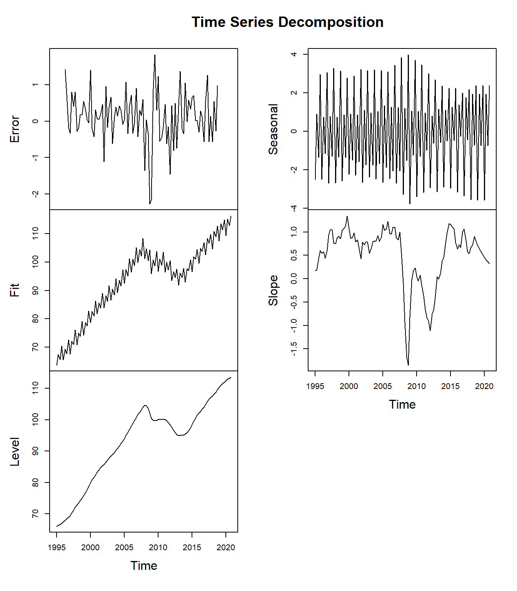
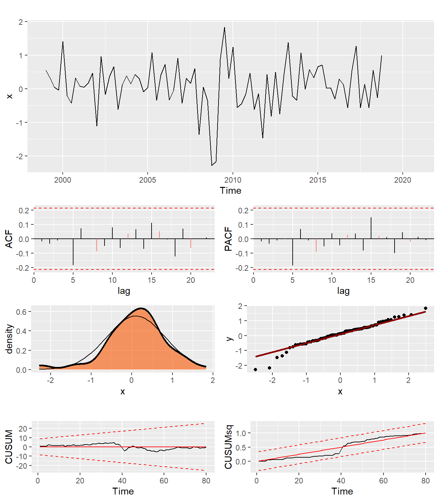

5 Suavizado Exponencial con mútiples ruidos
En este capítulo se presenta los modelos de suavizado exponencial con múltiples fuentes de error. Los llamaremos Power exponenTial Smoothing o simplemente PTS. Se trata de una generalización de los modelos de suavizado exponencial estándar que, si bien han sido propuestos en la bibliografía, no han recibido ninguna atención en la práctica y la única implementación conocida se encuentra en el paquete UComp.
El esquema seguido es muy parecido al anterior, con lo cual es sencillo establecer los paralelismos entre ambos tipos de modelos.
5.1 Espacio de los estados de nuevo
En la bibliografía de series temporales existe una discusión sobre la conveniencia de usar modelos con una sola fuente de error (single source of error en inglés, SSOE) como los el capítulo anterior o modelos con múltiples fuentes de error (multiple source of error, MSOE). La forma de espacio de los estados general para este tipo de modelos es
\[ \begin{array}{rl} \text{Ecuación de observación:} & y_t = w x_t + \epsilon_t \\ \text{Ecuación de transición:} & x_{t} = F x_{t-1} + \eta_t \end{array} \tag{5.1}\]
Hay dos diferencias entre este sistema y el sistema lineal de la Ecuación 4.1 del capítulo anterior:
- La ecuación de observación relaciona \(y_t\) con \(x_t\), no con \(x_{t-1}\). Este es un cambio simple de notación que se hace para poder acomodar con mayor facilidad algunos modelos estacionales.
- En la ecuación de transición aparece un vector de ruidos \(\eta_t\) sustituyendo al término anterior \(g\epsilon_t\). Este vector de ruidos se asume gaussiano con vector de medias cero y matriz de varianzas y covarianzas \(Q\).
La principal ventaja, en principio, es que se trata de una formulación más general y se espera que sea más flexible, como de hecho veremos más adelante. Además, permitirá estimar los componentes de tendencia y estacionales con mayor precisión al poder utilizar toda la muestra en cada momento del tiempo mediante algoritmos de suavizado.
Pero tiene también inconvenientes, puesto que la formulación no lineal no es tan inmediata como antes (de hecho no la vamos a tratar en este libro). Además, su tratamiento estadístico, aún siendo lineal, es más complicado, aunque está ya muy bien establecido en la bibliografía y no ofrece ningún problema. La complicación viene de que la única conexión entre las ecuaciones de observación y transición son solo los estados, no los ruidos. Esto hace que no podamos despejar el ruido de la ecuación de observación y sustituir en la de transición como se hizo en el capítulo anterior. De esta forma los estados NO son observables y habrá que utilizar algoritmos especializados para estimarlos, como son el filtro de Kalman y algoritmos de suavizado. Esto hace que el tratamiento de este tipo de modelos necesite de un nivel técnico estadístico que está fuera del interés de este libro, centrado en aspectos más pragmáticos. El lector interesado siempre puede consultar la bibliografía para entender con todo lujo de detalle lo que se expone en este capítulo.
Queda claro, por tanto, que el modelo lineal del capítulo anterior es un caso particular de la Ecuación 4.1 si \(\eta_t=g\epsilon_t\). Pero ahí no acaba la historia, porque se puede demostrar que el sistema de la Ecuación 4.1 se puede escribir como el sistema de la Ecuación 4.1, aunque los estados no son los mismos y su interpretación puede tener dificultades (ver Jerez et al., 2020). Es decir, en general, se puede ir en las dos direcciones.
Este tema es en realidad una cuestión que interesa a los teóricos porque diluye en cierto modo la disputa sobre la generalidad de los modelos SSOE y MSOE. En cualquier caso, la relevancia práctica de este hecho es que si partimos de una especificación MSOE como la que se propone en este capítulo es prácticamente imposible obtener como caso particular un modelo SSOE y viceversa. La conclusión es que en realidad son dos familias de modelos, cada una con sus ventajas y sus inconvenientes, que se deben tratar como complementarias y que se pueden usar simultáneamente.
5.2 Taxonomía
Los modelos de suavizado exponencial están estrechamente relacionados con los modelos de componentes no observables (Unobserved Components, ver por ejemplo, este artículo). Al igual que en el suavizado exponencial estándar, la familia de modelos completa va a estar configurada por combinaciones de distintas especificaciones para cada componente. En particular, la taxonomía para ruido aditivo aparece en la Figura 5.1.
El modelo de estacionalidad codificado como ‘D’ es nuevo y está formado por un conjunto de subcomponentes \(s_{j,t}\). Cada uno de ellos es una onda periódica estocástica que obedece a la forma
\[ \left[ \begin{array}{c} s_{j,t} \\ s_{j,t}^* \end{array} \right] = \left[ \begin{array}{cc} \cos \omega_j & \text{sen} \omega_j \\ -\text{sen} \omega_j & \cos \omega_j \end{array} \right] \left[ \begin{array}{c} s_{j,t-1} \\ s_{j,t-1}^* \end{array} \right]+ \left[ \begin{array}{c} \eta_{j,t} \\ \eta_{j,t}^* \end{array} \right] \]
donde \(\omega_j\) es la frecuencia del subcomponente, y \(\eta_{j,t}\) y \(\eta_{j,t}^*\) son dos ruidos diferentes con varianza común \(\sigma_j^2\), pero con varianzas diferentes a los de los demás subcomponentes estacionales, es decir, \(\sigma^2_j \neq \sigma^2_i, \forall i \neq j\).
Para comprender estos modelos es necesario tener en cuenta los siguientes puntos:
- El componente estacional ‘D’ está formado por \([m/2]\) términos, donde los corchetes aquí indican la división entera, es decir, \([m/2]=(m-1)/2\) para \(m\) impar y \([m/2]=m/2\) para \(m\) par. Las frecuencias de cada componente es \(\omega_j=2 \pi j /m, j=1,2,\dots,[m/2]\), o bien los periodos correspondientes son \(m_j=2 \pi / \omega_j = m/j, j=1,2,\dots,[m/2]\). Por ejemplo, para una serie mensual \(m=12\), que tendrá \(6\) subcomponentes con periodos \(12\), \(12/2=6\), \(12/3=4\), \(12/4=3\), \(12/5=2,4\) y \(12/6=2\). En el caso de una serie trimestral \(m=4\) y solo tenemos dos subcomponentes de periodos \(4\) y \(4/2=2\).
- El modelo ‘D’ para la estacionalidad es en realidad una descomposición en series de Fourier ortogonales permitiendo que cada frecuencia tenga una potencia diferente, en función de la varianza del ruido que afectan a cada una.
- El componente estacional entra en la ecuación de observación alineado en el tiempo con la variable salida, ambos se especifican en \(t\). Esto es así porque, si bien tiene sentido el retardo \(m\) en dicho componente para la estacionalidad aditiva (en el que \(s_{t-m}\) es el componente estacional libre de ruido), no tiene ningún sentido para el nuevo modelo ‘D’.
- En la Figura 5.1 todos los componentes son aditivos (lineales), incluyendo el ruido. El hecho de disponer de varias fuentes de error permite considerar todos estos modelos cuando no hay ruido en la ecuación de observación puesto que la aleatoriedad puede concentrarse en los demás ruidos, es decir, con \(\sigma_{\epsilon}^2=0\), lo que daría lugar a modelos PTS(N,.,.).
- En estos modelos el ‘residuo’ siempre es la innovación, es decir, los errores de predicción un periodo hacia adelante. Estos no coinciden con la estimación de \(\epsilon_t\) por medio de la ecuación de observación. Esta innovación NO es cero ni siquiera en el caso en que el modelo no tenga ruido en la ecuación de observación (modelos PTS(N,.,.)).
- La tendencia \(L\) es un caso particular de \(A\) con \(\sigma_{\eta_l}^2=0\). Este caso se incluye explícitamente porque resulta muy relevante en la predicción y no era posible en modelos SSOE.
- Los parámetros del modelo (algunos los llaman hiper-parámetros) son las varianzas de todos los ruidos incluidos en el modelo. Como veremos más tarde, cualquiera de las varianzas se puede eliminar de la estimación concentrándola fuera de la función de verosimilitud.
¿Cuántos armónicos (subcomponentes estacionales) tendrá un componente estacional para una serie horaria con estacionalidad diaria? ¿Y un serie horaria con estacional semanal? ¿Y una serie diaria con estacionalidad semanal?
La primera tendrá 12 armónicos de periodo \(24, 24/2, 24/3, \dots, 24/12\).
La segunda tendrá 84 armónicos de periodo \(168, 168/2, 168/3, \dots, 168/84\).
La tercera tendrá 3 armónicos de periodo \(7, 7/2\) y \(7/3\).
Como se ve, siempre que el periodo es par, el último periodo es 2, que se corresponde con lo que se suele conocer como la frecuencia Nyquist.
5.3 Filtrado y suavizado
Una primera cuestión que surge con cualquiera de los modelos lineales considerados es cómo estimar óptimamente los estados. Como ya se ha dicho, en estos sistemas los estados no son observables y por tanto su estimación no es tan directa como resultaba en el sistema en forma de innovaciones. Además, como en toda estimación, los estados solo se podrán conocer con cierto nivel de incertidumbre, que vendrá representada por su matriz de covarianzas \(\hat{P}_t\). Es decir, los estados serán variables aleatorias que evolucionan en el tiempo con una determinada distribución de probabilidad multivariante que tendrá sus momentos. Asumiendo normalidad, nos vamos a centrar en los primeros dos momentos de la distribución: el vector de medias y su matriz de covarianzas.
5.3.1 Filtro de Kalman
El filtro de Kalman es precisamente un algoritmo recursivo que nos da la estimación óptima del vector de medias y matriz de covarianzas de los estados, basándose en todas la información pasada hasta el momento presente. La derivación del mismo queda fuera del alcance de este libro y se puede consultar, por ejemplo, en Harvey (1989) o Durbin and Koopman (2012).
En lo que sigue tendremos en cuenta la siguiente notación: \(\text{E}(x_t|Y_{t-1})=\hat{x}_{t|t-1}\), \(\text{E}(x_t|Y_{t})=\hat{x}_{t|t}\) y \(\text{E}(x_t|Y_{T})=\hat{x}_{t|T}\) son las estimaciones del vector de estados con toda la información disponible hasta \(t-1\), \(t\) y toda la muestra, respectivamente; \(\text{Var}(x_t|Y_{t-1})=\hat{P}_{t|t-1}\), \(\text{Var}(x_t|Y_{t})=\hat{P}_{t|t}\) y \(\text{Var}(x_t|Y_{T})=\hat{P}_{t|T}\) son las matrices de covarianza de los estados con la información hasta \(t-1\), \(t\) y toda la muestra, respectivamente; \(\hat{v}_t\) y \(\hat{f}_t^2\) son la innovación (el error de predicción un periodo hacia adelante) y su varianza escalar.
Dada la ?eq-sysLinear podemos calcular la esperanza y varianza condicionada a la información inmediatamente anterior de la siguiente forma
\[ \begin{array}{rl} \text{E}(x_{t+1}|Y_{t})=\hat{x}_{t+1|t}=&F\hat{x}_{t|t} \\ \text{Var}(x_{t+1}|Y_{t})=\hat{P}_{t+1|t}=&\text{E}[x_{t+1}-\hat{x}_{t+1|t}][x_{t+1}-\hat{x}_{t+1|t}]'= \\ =&\text{E}[Fx_t+\eta_t-F\hat{x}_{t|t}][Fx_t+\eta_t-F\hat{x}_{t|t}]'= \\ =& \text{E}[F(x_t-\hat{x}_{t|t})+\eta_t][F(x_t-\hat{x}_{t|t})+\eta_t]'= \\ =&F\hat{P}_{t|t}F'+Q. \end{array} \]
De igual forma, las expresiones para las innovaciones y su varianza son
\[ \begin{array}{rl} \hat{v}_t=y_t-\text{E}(y_{t}|Y_{t-1})=&y_t-w\hat{x}_{t|t-1} \\ \hat{f}_t^2=\text{E}(y_t-w\hat{x}_{t|t-1})^2=&\text{E}(wx_t+\epsilon_t-w\hat{x}_{t|t-1})^2 \\ =& \text{E}[w(x_t-\hat{x}_{t|t-1})+\epsilon_t]^2\\ =& w\hat{P}_{t|t-1}w'+\sigma^2 \end{array} \]
Estas cuatro ecuaciones son en realidad parte del filtro de Kalman, que en muchas formulcaciones se divide en dos fases. Primero, se hace una primera estimación de la media y la covarianza de los estados con la predicción un periodo hacia adelante de las mismas (fase de predicción), para después adaptar estas estimaciones incorporando la información que da el nuevo dato (fase de adaptación).
\[ \begin{array}{cc} \text{Fase de predicción:} & \\ \hat{x}_{t+1|t}=F \hat{x}_{t|t}, & \hat{P}_{t+1|t} = F \hat{P}_{t|t} F'+ Q, \end{array} \] \[ \begin{array}{cc} \text{Fase de adaptación:} & \\ \hat{v}_t=y_t-w \hat{x}_{t|t-1}, & \hat{f}_t^2 = w \hat{P}_{t|t-1} w'+ \sigma^2, \\ \hat{x}_{t|t}=\hat{x}_{t|t-1}+\hat{P}_{t|t-1} w' \hat{f}_t^{-2} \hat{v}_t, & \hat{P}_{t|t}=\hat{P}_{t|t-1}-\hat{P}_{t|t-1} w' \hat{f}_t^{-2} w \hat{P}_{t|t-1}, \\ \end{array} \]
La formulación en ecuaciones de predicción y observación es especialmente conveniente para el tratamiento de observaciones ausentes. Cuando aparece una observación ausente solo se pueden aplicar las ecuaciones de predicción, y la predicción de los estados quedarán como interpolación de dichos valores ausentes. De hecho, el filtro de Kalman produce automáticamente la predicción extendiendo cualquier serie temporal con tantos valores ausentes como sea el horizonte de predicción.
Este filtro depende, como es habitual en todos los sistemas dinámicos, de condiciones iniciales \(\hat{x}_0\) y \(\hat{P}_0\), para lo que existen distintas aproximaciones, dependiendo de si el modelo es estacionario o no. Este tema es bastante técnico, el lector interesado en los detalles puede consultarlos en Harvey (1989), Durbin and Koopman (2012) o Casals et al. (2020).
5.3.2 Suavizado de intervalo fijo
El algoritmo de suavizado fijo produce la estimación de los estados y sus covarianzas con la información completa de toda la muestra, es decir, con toda la información pasada y futura. Al utilizar más información y ser una estimación centrada se consigue mayor precisión en las estimaciones y la eliminación de los desfases en la estimación. Existen muchas versiones, aquí se muestra una que corre en el sentido inverso del tiempo y se basa en las estimaciones previas del filtro de Kalman (ver detalles en la bibliografía).
\[ \begin{array}{cc} r_{t-1}=w'\hat{f}_{t-1}^{-2} \hat{v}_t+L'_tr_t, & N_{t-1}=w'\hat{f}_{t-1}^{-2}w+L_t'N_tL_t, \\ \hat{x}_{t|T}=\hat{x}_{t|t-1}+\hat{P}_{t|t-1} r_{t-1}, & \hat{P}_{t|T}=\hat{P}_{t|t-1}-\hat{P}_{t|t-1}N_{t-1}\hat{P}_{t|t-1}. \end{array} \]
La Figura 5.2 muestra la estimación con el filtro de Kalman y el algoritmo de suavizado de la tendencia de la serie de pasajeros de avión. Como se ve a simple vista la estimación suavizada (en rojo) es efectivamente más suave que la filtrada.
Filtrado frente a suavizado
Utilizar el filtro de Kalman o el de suavizado es semejante a utilizar medias móviles no centradas o centradas. En las medias móviles no centradas solo se utilizan observaciones del pasado (como en el filtro de Kalman), mientras que en las medias móviles centradas se utilizan tanto observaciones del pasado como del futuro (como en el algoritmo de suavizado). El suavizado utiliza más información y or tanto las estimaciones tendrán menor varianzaa.
5.4 Estimación y selección de modelos
Los parámetros del modelo que habrá que estimar son las varianzas de todos los ruidos presentes. En el capítulo anterior, en la Ecuación 4.3, se mostró cómo la verosimilitud para toda la muestra se puede expresar como el producto de las probabilidades condicionadas en cada momento del tiempo \(p(y_t|Y_{t-1})\). Dado que \(\hat{v}_t=y_t-\text{E}(y_t|Y_{t-1})\) y \(\text{Var}(y_t|Y_{t-1})=\hat{f}_t^2\), en este caso cada una de esas probabilidades se puede escribir como
\[ p(y_t|Y_{t-1}) = (2\pi \hat{f}_t^2)^{-1/2} \exp \left[ -\frac{\hat{v}_t^2}{2\hat{f}_t^2} \right]. \]
La función de verosimilitud para toda la muestra es
\[ L(\theta,x_0,P_0)|Y_T)= (2\pi )^{-T/2} \prod_{t=1}^T |\hat{f}_t|^{-1} \exp \left( - \frac{\hat{v}_t^2}{2\hat{f}_t^2} \right) \]
Si se compara esta ecuación con su homóloga del capítulo anterior se verá que la innovación juega el rol del residuo y \(f_t^2\) el de su varianza. Es interesante darse cuenta de que, dado que la innovación depende de los estados y estos solo se pueden conocer con cierta incertidumbre, dada por su varianza \(\hat{f}_t^2\), la varianza de la innovación ahora es mayor que la varianza del ruido de la ecuación de observación, es decir, \(\hat{f}_t^2>\sigma^2\), como se deduce del propio filtro de Kalman. Además, \(\hat{f}_t^2\), la varianza de la innovación, es cambiante en el tiempo, como lo indica el subíndice.
El logaritmo de la verosimilitud será
\[ \log[L(\theta,x_0,P_0)|Y_T)]= -T/2 \log (2\pi) -1/2 \sum_{t=1}^T \left[ 2\log(|\hat{f}_t|) + \hat{v}_t^2/\hat{f}_t^2 \right]. \]
La evaluación de esta función requiere la estimación de la innovación y su varianza, que son salidas del filtro de Kalman. Eso implica que para obtener un solo valor de la verosimilitud es necesario correr un algoritmo que va de principio a fin de la muestra. Por tanto, la maximización de esta función es un proceso computacional complejo que conlleva correr el filtro de Kalman muchas veces. Si el método de estimación requiere cálculo númerico del gradiente y/o hessiano, una sola iteración de dicho algoritmo requiere correr el filtro de Kalman al menos tantas veces como parámetros haya. Esa cantidad habrá que multiplicarla por el número de iteraciones que necesite el algoritmo para converger. Existen, no obstante, algunos desarrollos muy brillantes que permiten estimar el vector gradiente en bloque ejecutando una sola vez el filtro de Kalman (ver Durbin y Koopman, 2012).
Cualquiera de las varianzas se puede concentrar fuera de la verosimilitud. Como se ve, esta función de verosimilitud depende de las condiciones iniciales, que son muchas, pues no solo tenemos el vector de estados como en los modelos SSOE, sino que además ahora tenemos la matriz de covarianza inicial. En este caso resulta poco práctico ampliar el vector de parámetros con tantas condiciones iniciales. De hecho, se suele acudir a distintas técnicas de inicialización, como el filtro de Kalman aumentado o la inicialización difusa, ver la bibliografía.
Se pueden utilizar los criterios de información habituales (AIC, AICc, BIC, etc.) para determinar que modelo es el que mejor ajusta la serie penalizando por el número de parámetros.
Considera los datos de pasajeros de avión hasta Febrero de 2020 y estima un modelo PTS(A,A,D) para la serie en logaritmos con la función PTS. Muestra la optimización en curso con la entrada verbose. ¿Cuántas iteraciones han sido necesarias? Muestra la tabla de estimación y realiza un diagnóstico de residuos (tests del objeto modelo). Representa también los componentes estimados. ¿Te parece un modelo adecuado?
Iter FunEval Objective Step
2 -4.95405 1.00000
1 4 -4.96725 1.00000
2 6 -5.00714 1.00000
3 8 -5.03806 1.00000
4 10 -5.09592 1.00000
5 12 -5.15536 1.00000
6 14 -5.19219 1.00000
7 16 -5.25635 1.00000
8 19 -5.26563 0.50000
9 22 -5.27054 0.50000
10 24 -5.27222 1.00000
11 26 -5.27257 1.00000
12 28 -5.27267 1.00000
13 30 -5.27268 1.00000
14 32 -5.27268 1.00000
15 34 -5.27268 1.00000
16 37 -5.27268 0.50000
Q-Newton: Function convergence
Elapsed time: 0.26994 seconds
-------------------------------------------------------------
Box-Cox lambda: 1.00
Model: (A,A,D)
Periods: 12.0 / 6.0 / 4.0 / 3.0 / 2.4 / 2.0
Q-Newton: Function convergence
(*) concentrated out parameters
-------------------------------------------------------------
Param asymp.s.e. |T| |Grad|
-------------------------------------------------------------
Level: 2.32e-04 4.67e-05 4.9598 2.62e-05
Slope: 4.89e-07 3.27e-06 0.1495 1.80e-05
Seas(12.0): 1.32e-05 9.04e-06 1.4617 2.19e-05
Seas(6.0): 1.63e-06 7.04e-06 0.2315 1.19e-05
Seas(4.0): 2.43e-06 1.72e-05 0.1413 1.62e-05
Seas(3.0): 7.83e-07 4.04e-06 0.1940 1.74e-05
Seas(2.4): 3.67e-08 2.84e-06 0.0129 1.28e-05
Seas(2.0): 8.19e-07 7.74e-06 0.1057 2.03e-05
Irregular: 6.61e-04*
-------------------------------------------------------------
AIC: -3.2397 BIC: -3.0741 AICc: -3.2380
Log-Likelihood: 1017.5765
-------------------------------------------------------------
Summary statistics:
-------------------------------------------------------------
Missing data:
Q( 1): 0.0332 Q( 4): 5.7146
Q( 8): 7.3737 Q(12): 8.3664
Bera-Jarque: 2311.4271 P-value: 0.0000
H( 202): 0.7580 P-value: 0.0248
Outliers (>2.7 ES): 10
Q( 1): 3.9602 Q( 4): 8.6131
Q( 8): 13.5313 Q(12): 19.3036
Bera-Jarque: 13.6763 P-value: 0.0011
H( 198): 0.8643 P-value: 0.1528
-------------------------------------------------------------Summary statistics:
==================
Serie 1
Data points: 622.00000
Missing: 24.00000
Minimum: -0.17723
1st quartile: -0.02417
Mean: -0.00119
P(Mean = 0): 0.48960
Median: 0.00011
3rd quartile: 0.02143
Maximum: 0.35500
Interquartile range: 0.04560
Range: 0.53222
Satandard deviation: 0.04224
Variance: 0.00178
Skewness: 0.57133
Kurtosis: 9.44397
Autocorrelation tests:
=====================
SACF sa LB p.val SPACF sp
1 -0.005 . 0.014 0.907 -0.005 .
2 -0.006 . 0.032 0.984 -0.006 .
3 -0.008 . 0.068 0.995 -0.008 .
4 0.093 + 5.334 0.255 0.093 +
5 -0.022 . 5.625 0.344 -0.021 .
6 0.015 . 5.755 0.451 0.016 .
7 0.045 . 6.962 0.433 0.046 .
8 -0.015 . 7.094 0.527 -0.024 .
9 -0.011 . 7.162 0.620 -0.006 .
10 0.027 . 7.609 0.667 0.025 .
11 -0.028 . 8.085 0.706 -0.037 .
12 0.002 . 8.089 0.778 0.008 .
13 0.069 . 11.000 0.611 0.070 .
14 -0.016 . 11.162 0.673 -0.024 .
15 -0.021 . 11.432 0.721 -0.011 .
16 -0.017 . 11.603 0.771 -0.018 .
17 0.024 . 11.944 0.803 0.008 .
18 -0.025 . 12.339 0.829 -0.016 .
19 -0.112 - 20.172 0.384 -0.116 -
20 -0.055 . 22.076 0.336 -0.062 .
21 0.037 . 22.922 0.348 0.040 .
22 -0.010 . 22.991 0.402 -0.008 .
23 0.013 . 23.101 0.455 0.030 .
24 -0.028 . 23.587 0.485 -0.017 .
25 0.049 . 25.087 0.458 0.044 .
Gaussianity tests:
=================
Shapiro-Wilk normality test
data: x
W = 0.92433, p-value < 2.2e-16
Ratio of variance tests:
=======================
Portion_of_data F_statistic p.value
0.33333 1.3475 0.0365Han sido necesarias 16 iteraciones, que han requerido correr la función objetivo y el filtro de Kalman 37 veces. El modelo parece correcto, tanto por las propiedades estadísticas de las innovaciones (aunque los residuos no son normales), como por los componentes.
# Cargando librerías
from UComp import *
# Seleccionando muestra
x = window(np.log(airpas), end='2020-02-29')
# Estimando modelo PTS
m = PTS(x, model="AAD", verbose=True)
# Mostrando estimación
m.plot()
# Tests de innovaciones
tests(m)clear all
load data
% Seleccionando muestra
x = log(airpas(1 : 614));
% Estimando modelo PTS
m = PTS(x, 12, model='AAD', verbose = true);
% Mostrando estimación
stackedplot(m.comp)
% Tests de innovaciones
toolTEST(m.v)5.5 Predicción
En el capítulo anterior se mostró que la predicción óptima utilizando como función objetivo el error cuadrático medio es precisamente la media condicionada. En la práctica esto significa que la predicción se estima aplicando recursivamente las ecuaciones de predicción del filtro de Kalman, que es equivalente a suponer que la serie tiene valores ausentes al final de la muestra.
No obstante, si se quieren fórmulas explícitas de las predicciones, estas se pueden obtener por la sustitución recursiva de la ecuación de transición en sí misma. Para los distintos horizontes tenemos
\[ \begin{array}{c} x_{T+1}=F x_{T} + \eta_{T+1}, \\ x_{T+2}=F x_{T+1} + \eta_{T+1}= F^2 x_T+ F \eta_{T+1}+ \eta_{T+2}, \\ \vdots \\ x_{T+h}= F^h x_T+ \sum_{l=1}^h F^{h-l} \eta_{T+l}. \end{array} \]
Para la salida tenemos
\[ \begin{array}{c} y_{T+1}=wFx_{T}+w\eta_{t+1}+\epsilon_{T+1}, \\ y_{T+2}=wF^2x_T+wF\eta_{T+1}+w\eta_{t+2}+\epsilon_{T+2}, \\ \vdots \\ y_{T+h}=wF^{h}x_{T}+\sum_{l=1}^{h} wF^{h-l}\eta_{T+l}+\epsilon_{T+h}. \end{array} \]
Tomando esperanzas y varianzas condicionadas de estas expresiones tenemos
\[ \begin{array}{c} E(\hat{x}_{T+h}|Y_T)=F^hx_T \\ \text{Var}(\hat{x}_{T+h}|Y_T)=E[(x_{T+h}-\hat{x}_{T+h|T})(x_{T+h}-\hat{x}_{T+h|T})'|Y_T]= \sum_{l=1}^h F^{h-l} Q (F^{h-l})' \\ E(\hat{y}_{T+h}|Y_T)=wF^hx_T \\ \text{Var}(\hat{y}_{T+h}|Y_T)= \sum_{l=1}^h wF^{h-l} Q (F^{h-l})' w' + \sigma^2\\ \end{array} \]
Las simulaciones tipo Montecarlo se pueden realizar en este tipo de modelos, teniendo en cuenta que hay muchos más ruidos que simular. La simulación bootstrap muestreando los ruidos estimados conlleva muchas más complicación, puesto que habría que estimar todos los ruidos del modelo. Se puede hacer, pero engloba cierta complejidad, el lector interesado puede consultar los detalles sobre los algoritmos de disturbance y el importance sampling en Durbin y Koopman (2012).
Estima el modelo adecuado para la serie de pasajeros en logaritmos hasta Febrero de 2020 (PTS). Predice dos años hacia adelante la serie y representa la predicción media con su intervalo de confianza al 95%. Para ello debes utilizar la media y la varianza de las predicciones en los campos yFor e yForV del objeto con contiene el modelo.
------------------------------------------------------------
Identification of PTS models:
------------------------------------------------------------
Model AIC BIC AICc
------------------------------------------------------------
(N,N,N): -1.3901 -1.3757 -1.3901
(A,N,N): -0.6875 -0.6659 -0.6875
(N,N,L): -2.9510 -2.8430 -2.9510
(A,N,L): -2.9756 -2.8604 -2.9756
(N,N,D): -3.0751 -2.9312 -3.0735
(A,N,D): -3.1863 -3.0351 -3.1846
(N,A,N): -1.3682 -1.3394 -1.3682
(A,A,N): -0.6679 -0.6319 -0.6679
(N,A,L): -2.9398 -2.8174 -2.9382
(A,A,L): -2.9827 -2.8531 -2.9811
(N,A,D): -3.0708 -2.9125 -3.0692
(A,A,D): -3.2397 -3.0741 -3.2380
(N,Ad,N): -1.3101 -1.2813 -1.3101
(A,Ad,N): -0.7107 -0.6747 -0.7107
(N,Ad,L): -2.9445 -2.8221 -2.9429
(A,Ad,L): -2.9864 -2.8497 -2.9848
(N,Ad,D): -3.0702 -2.9046 -3.0685
(A,Ad,D): -3.2568 -3.0912 -3.2552
------------------------------------------------------------
Identification time: 5.47811 seconds
------------------------------------------------------------
-------------------------------------------------------------
Box-Cox lambda: 1.00
Model: (A,Ad,D)
Periods: 12.0 / 6.0 / 4.0 / 3.0 / 2.4 / 2.0
Q-Newton: Unable to decrease objective function
(*) concentrated out parameters
-------------------------------------------------------------
Param asymp.s.e. |T| |Grad|
-------------------------------------------------------------
Damping: 0.9900 0.0058 171.4025 2.08e-03
Level: 2.09e-04 4.63e-05 4.5235 5.42e-05
Slope: 9.17e-07 3.37e-06 0.2720 6.37e-03
Seas(12.0): 1.34e-05 9.06e-06 1.4760 5.37e-05
Seas(6.0): 1.66e-06 7.54e-06 0.2198 1.02e-04
Seas(4.0): 2.40e-06 1.57e-05 0.1528 5.65e-04
Seas(3.0): 7.85e-07 4.09e-06 0.1919 3.02e-05
Seas(2.4): 3.51e-08 2.84e-06 0.0124 9.92e-05
Seas(2.0): 8.10e-07 7.76e-06 0.1043 1.15e-04
Irregular: 6.68e-04*
-------------------------------------------------------------
AIC: -3.2568 BIC: -3.0912 AICc: -3.2552
Log-Likelihood: 1022.8429
-------------------------------------------------------------
Summary statistics:
-------------------------------------------------------------
Missing data:
Q( 1): 0.0627 Q( 4): 5.1021
Q( 8): 6.7093 Q(12): 8.1991
Bera-Jarque: 2340.9680 P-value: 0.0000
H( 202): 0.7570 P-value: 0.0243
Outliers (>2.7 ES): 10
Q( 1): 3.5528 Q( 4): 6.6797
Q( 8): 9.8367 Q(12): 14.1620
Bera-Jarque: 14.1673 P-value: 0.0008
H( 198): 0.8627 P-value: 0.1498
-------------------------------------------------------------# Borrando memoria
rm(list=ls())
library(UComp)
library(ggplot2)
# Seleccionando muestra
x = window(airpas, end= c(2020, 2))
# Estimando modelo PTS
m = PTS(log(x), h=24, verbose = TRUE)
# Calculando bandas de confianza
bands = exp(cbind(m$yFor + 2 * sqrt(m$yForV), m$yFor - 2 * sqrt(m$yForV)))
# Gráfico de predicciones
autoplot(tail(airpas, 60)) +
autolayer(exp(m$yFor)) + autolayer(bands) # Seleccionando muestra
x = window(airpas, end='2020-02-29')
# Estimando modelo PTS
m = PTS(np.log(x), h=24, verbose=True)
# Calculando bandas de confianza
bands = np.exp(pd.concat((m.yFor + 2 * np.sqrt(m.yForV),
m.yFor - 2 * np.sqrt(m.yForV)), axis=1))
# Gráfico de predicciones
plt.plot(airpas[-60:])
plt.plot(bands)
plt.plot(np.exp(m.yFor))% Borrando memoria
clear all
load data
% Selecionando muestra
x = log(airpas(1 : 614));
h = 24;
% Estimando modelo PTS
m = PTS(x, 12, h=h, verbose=true);
% Calculando bandas de confianza al 95%
bands = [m.yFor + 2 * sqrt(m.yForV) m.yFor - 2 * sqrt(m.yForV)];
% Mostrando gráficamente
t = 590 : length(airpas);
plot(t, airpas(t), 615 : 614 + h, exp([bands m.yFor]))5.6 Algunas extensiones
Hay un sinfín de extensiones posibles de los modelos presentados en este capítulo y el anterior en muchas direcciones. De hecho, la representación en espacio de los estados da mucha flexibilidad en este sentido, como muestra la bibliografía. Puesto que este libro está concebido para un curso en tiempo finito no tiene sentido ir mucho más allá. Sí que vamos a presentar dos posibles extensiones implementadas en UComp, que pueden ser útiles a analistas de todos los niveles.
5.6.1 Variables exógenas
El modelo de espacio de los estados es fácilmente generalizable para añadir variables exógenas. Basta con cambiar la ecuación de observación añadiendo un término lineal que incluya dichas variables como si fueran términos de regresión,
\[ \begin{array}{rl} \text{Modelo ETS lineal:} & y_t = w x_{t-1} + \beta u_t + \epsilon_t \\ \text{Modelo ETS no lineal:} & y_t = w(x_{t-1}) + \beta u_t + r(x_{t-1})\epsilon_t \\ \text{Modelo PTS:} & y_t = w x_t + \beta u_t + \epsilon_t \end{array} \]
donde \(\beta\) es un vector de \(k\) parámetros y \(u_t\) es una matriz de variables exógenas de dimensión \(k \times T\). Siempre que las variables exógenas se consideren no estocásticas, el cambio realmente solo afectará a las medias de la variable \(y_t\), pero no a las varianzas.
Aparte de las consideraciones más técnicas, es importante tener en cuenta al menos dos consideraciones adicionales:
- El investigador debe examinar detenidamente las propiedades de las variables exógenas en términos de componentes. Por ejemplo, no está claro el sentido de modelos que incluyen componentes de tendencia y estacionalidad junto con variables exógenas que a su vez tienen tales componentes. ¿Cuál es la interpretación de dichos componentes?
- Para obtener las predicciones de la variable endógena son necesarias predicciones de las variables exógenas. Esto en la práctica puede suponer un obstáculo en el caso de que sean desconocidas o sean incluso más difíciles de predecir que la variable endógena.
Representa gráficamente la serie del caudal del río Nilo (Nile). Algunos estudios han intentado ver si ha habido una caída significativa permanente del caudal del río a partir del año 1899. Analiza si es el caso con modelos de suavizado exponencial. Para ello crea una variable escalón que sea ceros hasta 1898 y unos después de esa fecha. Incluye esa variable en el modelo como variable exógena con la entrada u de la función PTS. Estima el modelo, muestra la tabla de estimación y los componentes. Comprueba si el modelo es adecuado (tests).
-------------------------------------------------------------
Box-Cox lambda: 1.00
Model: (A,N,N)
Periods:
Q-Newton: Function convergence
(*) concentrated out parameters
-------------------------------------------------------------
Param asymp.s.e. |T| |Grad|
-------------------------------------------------------------
Level: 0.1088 4.1619 0.0261 7.06e-06
Irregular: 28489.4403*
Beta(1): -247.0036* 28.9906 8.5201
-------------------------------------------------------------
AIC: 12.3812 BIC: 12.4854 AICc: 12.3812
Log-Likelihood: -615.0616
-------------------------------------------------------------
Summary statistics:
-------------------------------------------------------------
Missing data:
Q( 1): 2.6992 Q( 4): 5.5316
Q( 8): 9.3030 Q(12): 13.8241
Bera-Jarque: 0.2038 P-value: 0.9031
H( 34): 0.8429 P-value: 0.6211
Outliers (>2.7 ES): 1
Q( 1): 1.9887 Q( 4): 2.4948
Q( 8): 6.2509 Q(12): 11.4215
Bera-Jarque: 0.7522 P-value: 0.6865
H( 34): 0.8429 P-value: 0.6211
-------------------------------------------------------------Summary statistics:
==================
Serie 1
Data points: 84.00000
Missing: 0.00000
Minimum: -3.04161
1st quartile: -0.61269
Mean: 0.07274
P(Mean = 0): 0.49902
Median: 0.02827
3rd quartile: 0.64145
Maximum: 2.49036
Interquartile range: 1.25414
Range: 5.53197
Satandard deviation: 0.98186
Variance: 0.96405
Skewness: -0.08521
Kurtosis: 0.40730
Autocorrelation tests:
=====================
SACF sa LB p.val SPACF sp
1 0.194 . 3.290 0.070 0.194 .
2 0.027 . 3.353 0.187 -0.011 .
3 -0.072 . 3.820 0.282 -0.078 .
4 -0.289 - 11.383 0.023 -0.272 -
5 -0.147 . 13.355 0.020 -0.048 .
6 -0.025 . 13.414 0.037 0.016 .
7 -0.072 . 13.904 0.053 -0.107 .
8 0.163 . 16.427 0.037 0.122 .
9 -0.028 . 16.504 0.057 -0.143 .
10 -0.067 . 16.944 0.076 -0.067 .
11 -0.050 . 17.190 0.102 -0.069 .
12 -0.014 . 17.209 0.142 0.063 .
13 0.052 . 17.481 0.178 0.030 .
14 0.032 . 17.586 0.226 -0.063 .
15 -0.066 . 18.045 0.260 -0.091 .
16 0.016 . 18.072 0.320 0.007 .
17 -0.006 . 18.077 0.384 0.035 .
18 0.043 . 18.283 0.437 0.052 .
19 -0.031 . 18.387 0.497 -0.094 .
20 -0.085 . 19.195 0.509 -0.113 .
21 -0.038 . 19.358 0.562 -0.024 .
Gaussianity tests:
=================
Shapiro-Wilk normality test
data: x
W = 0.98857, p-value = 0.6721
Ratio of variance tests:
=======================
Portion_of_data F_statistic p.value
0.33333 1.5394 0.2686from UComp import *
# Gráfico
plt.plot(Nile)
# Entrada tipo escalón
n = Nile.shape[0]
u = np.zeros(n)
u[28:] = 1
# Identificando modelo PTS
m = PTS(Nile, u=u, verbose=True)
# Diagnóstico
m.plot()
tests(m)clear all
load data
% Gráfico
plot(Nile)
% Entrada tipo escalón
n = length(Nile);
u = repmat(0, n, 1);
u(29 : end) = 1;
% Identificando modelo PTS
m = PTS(Nile, 1, u=u, verbose=true);
% Diagnóstico
PTSvalidate(m);
stackedplot(m)
toolTEST(m.v)5.6.2 Ruidos con color
A lo largo de todo el capítulo (y el anterior) se ha considerado que el ruido \(\epsilon_t\) es ruido blanco. Cabe preguntarse qué sucede en la práctica cuando se realizan los tests de diagnóstico y se descubre que el ruido estimado en un caso concreto está correlacionado. Esto querría decir que el mejor modelo dentro de la familia del suavizado exponencial deja estructura por aprovechar para la predicción. este modelo sería superable por un modelo que incluyera dicha autocorrelación.
La respuesta puede ser muy variada, se podría concluir que los modelos de suavizado exponencial no son capaces de aprovechar toda la información de la serie y probar con otra familia de modelos diferente. Pero sin abandonar los modelos de suavizado exponencial aún cabe la posibilidad de extender el modelo para incluir modelos ‘coloreados’ del ruido, por ejemplo, ruidos que siguen un modelo \(ARMA(p,q)\). Este modelo tiene la siguiente formulación
\[ \hat{\epsilon}_t=\phi_1 \hat{\epsilon}_{t-1} + \phi_2 \hat{\epsilon}_{t-2}+\dots+\phi_p \hat{\epsilon}_{t-p}+a_t+\theta_1 a_{t-1}+\theta_2 a_{t-2}+\dots+\theta_q a_{t-q} \]
donde \(a_t\) sí es necesariamente ruido blanco. Es decir, el modelo ARMA está blanqueando los residuos, puesto que da como residuo un ruido blanco (\(a_t\)). El modelo ARMA relaciona la variable con \(p\) retardos de su pasado y \(q\) retardos de un ruido blanco. Se puede intuir que dicho modelo recoge la autocorrelación que pudo quedar en \(\hat{\epsilon}_t\). Esta hipótesis se debe comprobar nuevamente con los contrastes de hipótesis sobre este ruido blanco.
El modelo más general incluyendo esta versión para el ruido se puede escribir en forma de espacio de los estados y se podrían utilizar los mismos procedimientos para estimar y predecir el modelo completo. Naturalmente, el vector de parámetros a estimar aumenta en \(p+q\) parámetros adicionales.
Comprueba que la forma de espacio de los estados de un modelo \(ARMA(3, 2)\) es
\[ \begin{array}{rl} x_t=\left[ \begin{array}{c} x_{1,t} \\ x_{2,t} \\ x_{3,t} \end{array} \right] = & \left[ \begin{array}{ccc} \phi_1 & 1 & 0 \\ \phi_2 & 0 & 1 \\ \phi_3 & 0 & 0 \end{array} \right] \left[ \begin{array}{c} x_{1,t-1} \\ x_{2,t-1} \\ x_{3,t-1} \end{array} \right]+ \left[ \begin{array}{c} 0 \\ \theta_1 \\ \theta_2 \end{array} \right] \epsilon_t \\ y_t = & \left[ \begin{array}{ccc} 1 & 0 & 0 \end{array} \right] x_t+ \epsilon_t \end{array} \]
Las ecuaciones de transición por separado son las siguientes:
\[ \begin{array}{l} x_{1,t}=\phi_1 x_{1,t-1} + x_{2,t-1} \\ x_{2,t}=\phi_2 x_{1,t-1} + x_{3,t-1} + \theta_1 \epsilon_t \\ x_{3,t}=\phi_3 x_{1,t-1} + \theta_2 \epsilon_t \\ \end{array} \]
Si sustituimos la tercera en la expresión de \(x_{2,t-1}\) tenemos que
\[ x_{2,t}=\phi_2 x_{1,t-1} + \phi_3 x_{1,t-2} + \theta_2 \epsilon_{t-1} + \theta_1 \epsilon_t \\ \]
Si ahora sustituimos esta expresión en \(t-1\) en la primera ecuación tenemos
\[ x_{1,t}=\phi_1 x_{1,t-1} + \phi_2 x_{1,t-2} + \phi_3 x_{1,t-3} + \theta_2 \epsilon_{t-2} + \theta_1 \epsilon_{t-1} \]
Finalmente, la ecuación de observación indica que \(y_t=x_{1,t}+\epsilon_t\), de donde se obtiene que \(y_t\) sigue el modelo ARMA(3,2) propuesto.
El código siguiente en R simula un nivel constante de 100 con un ruido añadido que sigue un modelo ARMA(1,1). Represéntalo con tsDisplay. ¿Hay algo que te llame la atención? Prueba a estimar un modelo de suavizado exponencial (PTS), muestra la estimación, representa los componentes y comprueba si el ruido estimado es ruido blanco (tests).
Repite la estimación forzando un ruido coloreado con la entrada armaIdent. Comprueba de nuevo que el modelo es adecuado y representa la serie con sus predicciones 12 periodos hacia adelante.
Se observa que hay una caída en los valores de la ACF y de la PACF (en este caso, alternando signo). Este patrón se corresponde con un modelo ARMA(1,1). La estimación habitual y el test de residuos sería el siguiente
-------------------------------------------------------------
Box-Cox lambda: 1.00
Model: (N,N,N)
Periods:
Q-Newton: Gradient convergence
(*) concentrated out parameters
-------------------------------------------------------------
Param asymp.s.e. |T| |Grad|
-------------------------------------------------------------
Level: 1.4840*
-------------------------------------------------------------
AIC: 3.2367 BIC: 3.2613 AICc: 3.2367
Log-Likelihood: -483.4980
-------------------------------------------------------------
Summary statistics:
-------------------------------------------------------------
Missing data:
Q( 1): 39.3469 Q( 4): 76.9112
Q( 8): 78.8254 Q(12): 80.7317
Bera-Jarque: 3.5386 P-value: 0.1705
H( 100): 0.6381 P-value: 0.0256
Outliers (>2.7 ES): 1
Q( 1): 37.7571 Q( 4): 74.1215
Q( 8): 76.8516 Q(12): 78.7351
Bera-Jarque: 5.0787 P-value: 0.0789
H( 100): 0.6462 P-value: 0.0301
-------------------------------------------------------------Summary statistics:
==================
Serie 1
Data points: 284.00000
Missing: 0.00000
Minimum: -3.43443
1st quartile: -0.98215
Mean: -0.01237
P(Mean = 0): 0.86599
Median: 0.02707
3rd quartile: 0.93094
Maximum: 3.05530
Interquartile range: 1.91309
Range: 6.48973
Satandard deviation: 1.23405
Variance: 1.52287
Skewness: 0.01696
Kurtosis: -0.56212
Autocorrelation tests:
=====================
SACF sa LB p.val SPACF sp
1 0.357 + 36.663 0 0.357 +
2 -0.245 - 53.928 0 -0.427 -
3 -0.194 - 64.860 0 0.116 .
4 -0.150 - 71.385 0 -0.287 -
5 -0.075 . 73.038 0 0.096 .
6 -0.007 . 73.051 0 -0.174 -
7 0.005 . 73.059 0 0.061 .
8 -0.010 . 73.090 0 -0.137 -
9 -0.064 . 74.293 0 -0.034 .
10 -0.060 . 75.354 0 -0.077 .
11 -0.010 . 75.382 0 -0.022 .
12 0.054 . 76.263 0 0.023 .
13 0.027 . 76.474 0 -0.096 .
14 -0.103 . 79.682 0 -0.110 .
15 -0.084 . 81.835 0 -0.017 .
16 0.046 . 82.486 0 0.002 .
17 0.070 . 83.986 0 -0.022 .
18 0.013 . 84.038 0 -0.051 .
19 -0.045 . 84.661 0 -0.069 .
20 0.021 . 84.795 0 0.089 .
21 0.095 . 87.559 0 -0.004 .
22 -0.002 . 87.560 0 -0.049 .
23 -0.037 . 87.986 0 0.021 .
24 0.015 . 88.052 0 -0.014 .
25 -0.032 . 88.367 0 -0.049 .
Gaussianity tests:
=================
Shapiro-Wilk normality test
data: x
W = 0.99217, p-value = 0.1394
Ratio of variance tests:
=======================
Portion_of_data F_statistic p.value
0.33333 0.6292 0.0266El modelo óptimo es un PTS(N,N,N), es decir, está detectando correctamente que no hay estacionalidad y además no hay tendencia (solo un nivel). Pero los residuos no son ruido blanco, por lo que tiene sentido añadir la posibilidad de ruido coloreado. Llama la atención, no obstante, que el nivel que se obtiene no es un nivel constante, sino que replica la serie original, esta es evidencia adicional de que el modelo no es correcto, pero para realizar esta observación estamos utilizando “información privilegiada”, puesto que sabemos cuál es el modelo correcto porque es un modelo simulado. En situaciones reales en las que no conocemos el modelo verdadero no hay posibilidad de llegar a esta conclusión.
Repite la estimación forzando un ruido coloreado con la entrada armaIdent. Comprueba de nuevo que el modelo es adecuado y representa la serie con sus predicciones 12 periodos hacia adelante.
-------------------------------------------------------------
Box-Cox lambda: 1.00
Model: (A,N,N)
Periods:
Q-Newton: Function convergence
(*) concentrated out parameters
-------------------------------------------------------------
Param asymp.s.e. |T| |Grad|
-------------------------------------------------------------
Irregular: 0.8599*
AR(1): -0.7575 0.0386 19.6260 1.41e-05
MA(1): 0.8267 0.0294 28.0890 1.58e-05
Const: 100.2747 0.3981 251.8779 1.07e-06
-------------------------------------------------------------
AIC: 2.7140 BIC: 2.7510 AICc: 2.7140
Log-Likelihood: -404.1003
-------------------------------------------------------------
Summary statistics:
-------------------------------------------------------------
Missing data:
Q( 1): 0.9783 Q( 4): 2.0162
Q( 8): 7.0215 Q(12): 8.1166
Bera-Jarque: 12.4966 P-value: 0.0019
H( 100): 0.9302 P-value: 0.7181
Outliers (>2.7 ES): 3
Q( 1): 0.0544 Q( 4): 0.8158
Q( 8): 3.5379 Q(12): 4.8201
Bera-Jarque: 6.2617 P-value: 0.0437
H( 100): 0.8403 P-value: 0.3857
-------------------------------------------------------------Summary statistics:
==================
Serie 1
Data points: 284.00000
Missing: 0.00000
Minimum: -2.39479
1st quartile: -0.71441
Mean: 0.00902
P(Mean = 0): 0.87189
Median: -0.00310
3rd quartile: 0.71279
Maximum: 2.78063
Interquartile range: 1.42720
Range: 5.17541
Satandard deviation: 0.94200
Variance: 0.88736
Skewness: 0.02870
Kurtosis: -0.57083
Autocorrelation tests:
=====================
SACF sa LB p.val SPACF sp
1 0.021 . 0.121 0.728 0.021 .
2 -0.040 . 0.578 0.749 -0.040 .
3 0.002 . 0.578 0.901 0.003 .
4 -0.017 . 0.666 0.955 -0.019 .
5 0.002 . 0.667 0.985 0.003 .
6 0.062 . 1.791 0.938 0.061 .
7 -0.005 . 1.797 0.970 -0.007 .
8 0.064 . 2.992 0.935 0.069 .
9 -0.062 . 4.141 0.902 -0.067 .
10 0.013 . 4.189 0.938 0.024 .
11 -0.013 . 4.236 0.962 -0.020 .
12 0.048 . 4.926 0.960 0.050 .
13 0.036 . 5.308 0.968 0.030 .
14 -0.070 . 6.766 0.943 -0.076 .
15 -0.070 . 8.246 0.914 -0.056 .
16 0.065 . 9.521 0.890 0.057 .
17 0.016 . 9.603 0.919 0.022 .
18 0.030 . 9.882 0.936 0.020 .
19 -0.040 . 10.364 0.943 -0.043 .
20 -0.011 . 10.402 0.960 -0.005 .
21 0.098 . 13.366 0.895 0.108 .
22 -0.033 . 13.694 0.912 -0.035 .
23 -0.042 . 14.232 0.920 -0.037 .
24 0.029 . 14.487 0.935 0.007 .
25 -0.024 . 14.671 0.949 -0.016 .
Gaussianity tests:
=================
Shapiro-Wilk normality test
data: x
W = 0.99101, p-value = 0.07972
Ratio of variance tests:
=======================
Portion_of_data F_statistic p.value
0.33333 0.7271 0.1262El modelo estimado ahora está correctamente identificado como un ARMA(1,1).
from UComp import *
# Simulación
y = armaFilter([1,0.8], [1, -0.8], np.random.normal(0, 1, 300)) + 100
# Identificación asumiendo ruido blanco
m = PTS(y, s=1, verbose=True)
tests(m)
# Identificación asumiendo ruido ARMA
m = PTS(y, s=1, armaIdent = True, verbose=True)
tests(m)clear all
% Simulación
y = filter([1 0.8], [1 -0.8], randn(300, 1)) + 100;
% Identificación asumiendo ruido blanco
m = PTS(y, 1, verbose=true);
toolTEST(m.v)
% Identificación asumiendo ruido ARMA
m = PTS(y, 1, armaIdent=true, verbose=true);
toolTEST(m.v)El código siguiente simula un nivel constante de 100 con un ruido añadido que sigue un modelo ARMA(1,0) o AR(1). Represéntalo con tsDisplay. Estima un modelo de suavizado exponencial y comprueba si es correcto. Repite la estimación forzando la estimación de ruido coloreado con la entrada armaIdent. Comprueba de nuevo que el modelo es adecuado y representa la serie con sus predicciones 12 periodos hacia adelante.
rm(list = ls())
y = armaFilter(1, c(1, -0.8), rnorm(300)) + 100Se observa que hay una caída en los valores de la ACF y un solo valor importante en la PACF. Este patrón se corresponde con un modelo AR(1). La estimación habitual y el test de residuos sería el siguiente
-------------------------------------------------------------
Box-Cox lambda: 1.00
Model: (N,N,N)
Periods:
Q-Newton: Gradient convergence
(*) concentrated out parameters
-------------------------------------------------------------
Param asymp.s.e. |T| |Grad|
-------------------------------------------------------------
Level: 1.0981*
-------------------------------------------------------------
AIC: 2.9375 BIC: 2.9622 AICc: 2.9375
Log-Likelihood: -438.6256
-------------------------------------------------------------
Summary statistics:
-------------------------------------------------------------
Missing data:
Q( 1): 0.7072 Q( 4): 10.2280
Q( 8): 19.1433 Q(12): 25.1571
Bera-Jarque: 2.9872 P-value: 0.2246
H( 100): 0.9984 P-value: 0.9937
Outliers (>2.7 ES): 2
Q( 1): 0.4642 Q( 4): 12.4293
Q( 8): 19.1149 Q(12): 27.1592
Bera-Jarque: 0.3583 P-value: 0.8360
H( 100): 0.9827 P-value: 0.9305
-------------------------------------------------------------Summary statistics:
==================
Serie 1
Data points: 284.00000
Missing: 0.00000
Minimum: -3.31307
1st quartile: -0.61751
Mean: -0.00052
P(Mean = 0): 0.99340
Median: 0.01915
3rd quartile: 0.63748
Maximum: 2.80384
Interquartile range: 1.25499
Range: 6.11691
Satandard deviation: 1.05422
Variance: 1.11139
Skewness: -0.16909
Kurtosis: 0.34211
Autocorrelation tests:
=====================
SACF sa LB p.val SPACF sp
1 -0.050 . 0.726 0.394 -0.050 .
2 -0.131 - 5.661 0.059 -0.134 -
3 -0.083 . 7.633 0.054 -0.099 .
4 -0.073 . 9.167 0.057 -0.105 .
5 -0.116 . 13.053 0.023 -0.160 -
6 -0.086 . 15.200 0.019 -0.154 -
7 -0.036 . 15.579 0.029 -0.133 -
8 0.079 . 17.402 0.026 -0.024 .
9 0.002 . 17.404 0.043 -0.086 .
10 0.100 . 20.382 0.026 0.039 .
11 0.003 . 20.385 0.040 -0.039 .
12 -0.069 . 21.801 0.040 -0.090 .
13 0.029 . 22.057 0.054 0.013 .
14 -0.035 . 22.425 0.070 -0.053 .
15 -0.045 . 23.043 0.083 -0.050 .
16 0.020 . 23.168 0.109 -0.006 .
17 -0.023 . 23.327 0.139 -0.058 .
18 -0.021 . 23.467 0.173 -0.074 .
19 -0.023 . 23.623 0.211 -0.079 .
20 0.033 . 23.954 0.244 -0.032 .
21 0.025 . 24.153 0.286 -0.040 .
22 0.051 . 24.946 0.300 0.028 .
23 0.007 . 24.963 0.352 -0.019 .
24 -0.056 . 25.931 0.357 -0.080 .
25 0.042 . 26.492 0.382 0.042 .
Gaussianity tests:
=================
Shapiro-Wilk normality test
data: x
W = 0.992, p-value = 0.1283
Ratio of variance tests:
=======================
Portion_of_data F_statistic p.value
0.33333 1.0001 0.9996El modelo óptimo es un PTS(N,N,N), es decir, está detectando correctamente que no hay estacionalidad y además no hay tendencia (solo un nivel). Pero los residuos PARECEN ruido blanco, por lo que un analista ingenuo podría concluir que el modelo es correcto. Sin embargo, se puede ver que el nivel se parece demasiado a la serie temporal, lo cual es indicio de error de especificación. En particular hay un problema de identificación,
A continuación repite la estimación forzando la estimación de ruido coloreado con la entrada armaIdent. Comprueba de nuevo que el modelo es adecuado y representa la serie con sus predicciones 12 periodos hacia adelante.
-------------------------------------------------------------
Box-Cox lambda: 1.00
Model: (A,N,N)
Periods:
Q-Newton: Function convergence
(*) concentrated out parameters
-------------------------------------------------------------
Param asymp.s.e. |T| |Grad|
-------------------------------------------------------------
Irregular: 0.9614*
AR(1): -0.7519 0.0379 19.8608 1.74e-05
Const: 100.0320 0.2256 443.4388 1.18e-05
-------------------------------------------------------------
AIC: 2.8114 BIC: 2.8361 AICc: 2.8114
Log-Likelihood: -419.7124
-------------------------------------------------------------
Summary statistics:
-------------------------------------------------------------
Missing data:
Q( 1): 1.2048 Q( 4): 2.7767
Q( 8): 8.8616 Q(12): 15.5452
Bera-Jarque: 0.1413 P-value: 0.9318
H( 100): 0.9636 P-value: 0.8531
Outliers (>2.7 ES): 2
Q( 1): 1.6473 Q( 4): 4.3460
Q( 8): 9.1062 Q(12): 18.2479
Bera-Jarque: 1.1780 P-value: 0.5549
H( 100): 0.8837 P-value: 0.5377
-------------------------------------------------------------Summary statistics:
==================
Serie 1
Data points: 284.00000
Missing: 0.00000
Minimum: -3.06088
1st quartile: -0.60833
Mean: 0.01997
P(Mean = 0): 0.73310
Median: -0.03497
3rd quartile: 0.66593
Maximum: 2.74593
Interquartile range: 1.27426
Range: 5.80681
Satandard deviation: 0.98589
Variance: 0.97199
Skewness: 0.03225
Kurtosis: -0.05838
Autocorrelation tests:
=====================
SACF sa LB p.val SPACF sp
1 0.062 . 1.100 0.294 0.062 .
2 -0.039 . 1.541 0.463 -0.043 .
3 -0.020 . 1.658 0.646 -0.015 .
4 -0.028 . 1.889 0.756 -0.028 .
5 -0.077 . 3.597 0.609 -0.075 .
6 -0.054 . 4.460 0.615 -0.048 .
7 -0.009 . 4.483 0.723 -0.010 .
8 0.095 . 7.132 0.522 0.089 .
9 0.029 . 7.376 0.598 0.012 .
10 0.113 . 11.131 0.347 0.112 .
11 0.022 . 11.268 0.421 0.006 .
12 -0.049 . 11.974 0.448 -0.040 .
13 0.033 . 12.296 0.504 0.057 .
14 -0.027 . 12.522 0.564 -0.021 .
15 -0.039 . 12.977 0.604 -0.014 .
16 0.018 . 13.078 0.667 0.024 .
17 -0.020 . 13.194 0.723 -0.030 .
18 -0.017 . 13.287 0.774 -0.034 .
19 -0.016 . 13.369 0.819 -0.023 .
20 0.035 . 13.750 0.843 0.027 .
21 0.030 . 14.037 0.868 0.014 .
22 0.052 . 14.874 0.868 0.065 .
23 0.011 . 14.913 0.898 -0.001 .
24 -0.047 . 15.609 0.902 -0.051 .
25 0.036 . 16.026 0.914 0.065 .
Gaussianity tests:
=================
Shapiro-Wilk normality test
data: x
W = 0.99652, p-value = 0.7915
Ratio of variance tests:
=======================
Portion_of_data F_statistic p.value
0.33333 1.056 0.7932De nuevo el modelo se identifica correctamente como un AR(1).
from UComp import *
# Simulación
y = armaFilter([1], [1, -0.8], np.random.normal(0, 1, 300)) + 100
tsDisplay(y)
# Identificación asumiendo ruido blanco
m = PTS(y, s=1, verbose=True)
tests(m)
# Identificación asumiendo ruido ARMA
m = PTS(y, s=1, armaIdent=True, verbose=True)
tests(m)clear all
% Simulación
y = filter(1, [1 -0.8], randn(300, 1)) + 100;
toolTEST(y)
% Identificación asumiendo ruido blanco
m = PTS(y, 1, verbose=true);
toolTEST(m.v)
% Identificación asumiendo ruido ARMA
m = PTS(y, 1, armaIdent=true, verbose=true);
toolTEST(m.v)5.7 Dos ejemplos completos
5.7.1 Análisis completo de la entrada de turistas por aire en España
Ya estamos en condiciones de realizar un análisis completo de la serie de pasajeros de avión, que puede hacerse siguiendo este ejemplo. El ejercicio de predicción que se propone es para el año 2019 de la serie de pasajeros, que es el último año después de las profundas perturbaciones debidas a la pandemia. Luego extenderemos al resto de la muestra para ver qué pérdida de viajeros anuncia el modelo de suavizado exponencial en comparación con los métodos tipo naive.
Es conveniente siempre limpiar la memoria y cargar los paquetes necesarios. Genera una serie nueva (por ejemplo, x) que sean los pasajeros hasta finales de 2018. Realiza la predicción para 2019 con cuatro modelos: naive, naive estacional, media anual, PTS (en logaritmos) y PTS con la muestra comenzando en 1995 (en logaritmos). Indica si el modelo PTS es aceptable mostrando los parámetros, los componentes y los tests. ¿Qué modelo es el que mejor predice el año 2019? Representa gráficamente todas las predicciones con los valores reales.
Estima con los cinco métodos la pérdida de pasajeros de avión desde marzo de 2020.
-------------------------------------------------------------
Box-Cox lambda: 1.00
Model: (A,Ad,D)
Periods: 12.0 / 6.0 / 4.0 / 3.0 / 2.4 / 2.0
Q-Newton: Function convergence
(*) concentrated out parameters
-------------------------------------------------------------
Param asymp.s.e. |T| |Grad|
-------------------------------------------------------------
Damping: 0.9536 0.0059 161.8644 1.61e-06
Level: 2.15e-05 2.04e-05 1.0550 3.64e-07
Slope: 6.95e-06 7.35e-06 0.9455 8.23e-07
Seas(12.0): 2.20e-05 1.23e-05 1.7857 2.65e-07
Seas(6.0): 2.08e-06 1.66e-05 0.1251 9.23e-07
Seas(4.0): 1.29e-06 8.49e-06 0.1524 2.73e-06
Seas(3.0): 1.39e-06 1.01e-05 0.1366 3.69e-07
Seas(2.4): 2.46e-07 3.96e-06 0.0621 1.06e-06
Seas(2.0): 1.86e-07 4.98e-06 0.0373 2.64e-07
Irregular: 3.31e-04*
-------------------------------------------------------------
AIC: -3.4856 BIC: -3.1931 AICc: -3.4717
Log-Likelihood: 524.9308
-------------------------------------------------------------
Summary statistics:
-------------------------------------------------------------
Missing data:
Q( 1): 0.1184 Q( 4): 0.6482
Q( 8): 3.8427 Q(12): 9.6375
Bera-Jarque: 25.5935 P-value: 0.0000
H( 92): 0.8866 P-value: 0.5649
Outliers (>2.7 ES): 6
Q( 1): 0.9178 Q( 4): 1.6832
Q( 8): 6.0620 Q(12): 11.2907
Bera-Jarque: 2.2358 P-value: 0.3270
H( 90): 0.8361 P-value: 0.3976
-------------------------------------------------------------Summary statistics:
==================
Serie 1
Data points: 284.00000
Missing: 12.00000
Minimum: -0.10471
1st quartile: -0.01583
Mean: 0.00318
P(Mean = 0): 0.10674
Median: 0.00389
3rd quartile: 0.02117
Maximum: 0.12575
Interquartile range: 0.03700
Range: 0.23046
Satandard deviation: 0.03237
Variance: 0.00105
Skewness: -0.10317
Kurtosis: 1.50795
Autocorrelation tests:
=====================
SACF sa LB p.val SPACF sp
1 -0.005 . 0.007 0.931 -0.005 .
2 0.000 . 0.007 0.996 0.000 .
3 -0.007 . 0.023 0.999 -0.007 .
4 -0.032 . 0.308 0.989 -0.032 .
5 -0.008 . 0.326 0.997 -0.008 .
6 0.033 . 0.625 0.996 0.033 .
7 -0.046 . 1.222 0.990 -0.046 .
8 0.071 . 2.660 0.954 0.070 .
9 -0.060 . 3.678 0.931 -0.060 .
10 -0.114 . 7.387 0.688 -0.114 .
11 0.052 . 8.171 0.698 0.052 .
12 -0.030 . 8.422 0.751 -0.029 .
13 0.003 . 8.425 0.815 0.001 .
14 -0.063 . 9.555 0.794 -0.077 .
15 0.049 . 10.260 0.803 0.062 .
16 -0.087 . 12.439 0.713 -0.094 .
17 0.012 . 12.482 0.770 0.007 .
18 -0.043 . 13.036 0.789 -0.029 .
19 -0.073 . 14.619 0.746 -0.102 .
20 -0.132 - 19.780 0.472 -0.140 -
21 0.034 . 20.120 0.514 0.032 .
22 0.065 . 21.391 0.497 0.076 .
23 0.087 . 23.671 0.422 0.057 .
24 0.003 . 23.674 0.480 0.000 .
25 -0.028 . 23.906 0.525 -0.020 .
Gaussianity tests:
=================
Shapiro-Wilk normality test
data: x
W = 0.97805, p-value = 0.0003361
Ratio of variance tests:
=======================
Portion_of_data F_statistic p.value
0.33333 1.0986 0.6584 ME RMSE MAE MPE PRMSE MAPE
naive -5053.6817 6714.306 5430.9235 -19.638589 25.959385 22.034494
naiveS -1059.6768 1118.936 1059.6768 -4.941171 5.236211 4.941171
exp(m$yFor) 885.6997 1073.391 885.6997 3.735341 4.303053 3.735341
exp(m1995$yFor) 664.8557 793.085 664.8557 2.896275 3.289618 2.896275
sMAPE MASE RelMAE Theil's U
naive 26.008694 9.334455 0.19049909 1.9629025
naiveS 5.082549 1.821330 0.03717001 0.3959328
exp(m$yFor) 3.645267 1.522305 0.03106746 0.3253726
exp(m1995$yFor) 2.843283 1.142728 0.02332097 0.2487424Los modelos PTS son apropiados, pero las predicciones, a juzgar por las métricas de error son peores que las de los modelos sencillos, incluso los que no tienen estacionalidad.
# Borrando memoria
rm(list = ls())
# Cargando librerías
library(UComp)
library(ggplot2)
# Seleccionando muestras
x = window(airpas, end = c(2018, 12))
x1995 = window(airpas, start = 1995, end = c(2018, 12))
# Horizonte y periodo estacional
h = 12 # Horizonte
m = 12 # Observaciones por año
# Estimando métodos/modelos
naive = ts(rep(tail(x, 1), h), start = 2019, frequency = m)
naiveS = ts(tail(x, h), start = 2019, frequency = m)
mediaAnual = ts(rep(mean(tail(x, m)), h), start = 2019, frequency = m)
m = PTS(log(x), h = h)
m1995 = PTS(log(x1995), h = h)
# Mostrando modelo
print(m1995)
# Mostrando componentes
plot(m1995)
# TEsts de innovaciones
tests(m1995)
# Todas las predicciones en una sola matriz
predicciones = cbind(naive, naiveS, mediaAnual, exp(m$yFor), exp(m1995$yFor))
# Precisión de predicciones
Accuracy(predicciones, airpas)
# Gráfico de predicciones
autoplot(tail(airpas, 120)) + autolayer(predicciones)from UComp import *
# Seleccionando muestras
x = window(airpas, end="2018-12-31")
x1995 = window(airpas, start="1995-01-31" , end="2018-12-31")
# Horizonte y periodo estacional
h = 12 # Horizonte
m = 12 # Observaciones por año
# Estimando métodos/modelos
m = PTS(np.log(x), h = h, verbose=True)
naive = ts(x[-1].repeat(h), start=m.yFor.index[0], freq='m')
naiveS = ts(x[-12:].repeat(1), start=m.yFor.index[0], freq='m')
mediaAnual = ts(np.mean(x[-12:]).repeat(h), start=m.yFor.index[0], freq='m')
m1995 = PTS(np.log(x1995), h=h, verbose=True)
# Mostrando componentes
m1995.plot()
# TEsts de innovaciones
tests(m1995)
# Todas las predicciones en una sola matriz
predicciones = pd.concat((naive, naiveS, mediaAnual,
np.exp(m.yFor), np.exp(m1995.yFor)), axis=1)
# Precisión de predicciones
Accuracy(predicciones, airpas)
# Gráfico de predicciones
plt.plot(airpas[-80:])
plt.plot(predicciones)% Borrando memoria
clear all
load data
% Seleccionando muestras
x = airpas(1 : 600);
x1995 = airpas(313 : 600);
% Horizonte y periodo estacional
h = 12; % Horizonte
m = 12; % Observaciones por año
% Estimando métodos/modelos
naive = repmat(x(end), h, 1);
naiveS = x(end - h + 1 : end);
mediaAnual = repmat(mean(x(end - h + 1 : end)), h, 1);
m = PTS(log(x), 12, h=h, verbose=true);
m1995 = PTS(log(x1995), 12, h=h, verbose=true);
% Mostrando componentes
stackedplot(m1995.comp);
% TEsts de innovaciones
toolTEST(m1995.v)
% Todas las predicciones en una sola matriz
predicciones = [naive naiveS mediaAnual exp(m.yFor) exp(m1995.yFor)];
% Precisión de predicciones
Accuracy(predicciones, airpas(1 : 600 + h))
% Gráfico de predicciones
t = (553 : length(airpas))';
plot(t, airpas(t), (601 : 600 + h), predicciones)5.7.2 Análisis completo del Producto Interior Bruto de España
Genera predicciones del PIB para el año 2019 y 2020 con muestras que comiencen en 1995 y 2005, respectivamente. Utilizar además el método naive, naive estacional y media del último año.
------------------------------------------------------------
Identification of PTS models:
------------------------------------------------------------
Model AIC BIC AICc
------------------------------------------------------------
(N,N,N): 5.7628 5.8162 5.7628
(A,N,N): 5.2305 5.3106 5.2305
(N,N,L): 3.0705 3.2575 3.0809
(A,N,L): 3.1585 3.3722 3.1689
(N,N,D): 3.1004 3.3141 3.1109
(A,N,D): 3.2733 3.5137 3.2942
(N,A,N): 5.8095 5.9163 5.8095
(A,A,N): 5.0949 5.2285 5.0949
(N,A,L): 2.4365 2.6769 2.4573
(A,A,L): 2.4573 2.7245 2.4782
(N,A,D): 2.4276 2.6948 2.4485
(A,A,D): 2.4485 2.7423 2.4797
(N,Ad,N): 5.8045 5.9113 5.8045
(A,Ad,N): 5.0804 5.2139 5.0804
(N,Ad,L): 2.4042 2.6446 2.4250
(A,Ad,L): 2.4250 2.6921 2.4458
(N,Ad,D): 2.3839 2.6510 2.4047
(A,Ad,D): 2.4047 2.6986 2.4360
------------------------------------------------------------
Identification time: 0.29650 seconds
------------------------------------------------------------
-------------------------------------------------------------
Box-Cox lambda: 1.00
Model: (N,Ad,D)
Periods: 4.0 / 2.0
Q-Newton: Function convergence
(*) concentrated out parameters
-------------------------------------------------------------
Param asymp.s.e. |T| |Grad|
-------------------------------------------------------------
Damping: 0.8926 0.0370 24.0958 1.34e-05
Level: 0.0010 0.0468 0.0217 6.09e-07
Slope: 0.1449*
Seas(4.0): 0.0125 0.0057 2.1844 5.98e-06
Seas(2.0): 0.0065 0.0026 2.5498 1.68e-07
-------------------------------------------------------------
AIC: 2.3839 BIC: 2.6510 AICc: 2.4047
Log-Likelihood: -104.4276
-------------------------------------------------------------
Summary statistics:
-------------------------------------------------------------
Missing data:
Q( 1): 0.0235 Q( 4): 0.2640
Q( 8): 4.5742 Q(12): 5.9148
Bera-Jarque: 20.2832 P-value: 0.0000
H( 32): 0.5749 P-value: 0.1226
Outliers (>2.7 ES): 2
Q( 1): 3.1364 Q( 4): 3.8338
Q( 8): 8.8073 Q(12): 13.9930
Bera-Jarque: 0.4503 P-value: 0.7984
H( 30): 0.6023 P-value: 0.1708
-------------------------------------------------------------------------------------------------------------------------
Identification of PTS models:
------------------------------------------------------------
Model AIC BIC AICc
------------------------------------------------------------
(N,N,N): 5.7780 5.8503 5.7780
(A,N,N): 5.2402 5.3487 5.2402
(N,N,L): 3.2970 3.5502 3.3327
(A,N,L): 3.5625 3.8519 3.6161
(N,N,D): 3.3502 3.6395 3.4037
(A,N,D): 3.6112 3.9367 3.6648
(N,A,N): 5.8628 6.0074 5.8628
(A,A,N): 5.2501 5.4309 5.2679
(N,A,L): 2.9169 3.2424 2.9704
(A,A,L): 2.9526 3.3143 3.0240
(N,A,D): 2.9197 3.2813 2.9911
(A,A,D): 2.9554 3.3532 3.0625
(N,Ad,N): 5.8494 5.9941 5.8494
(A,Ad,N): 5.2258 5.4066 5.2436
(N,Ad,L): 2.8559 3.1814 2.9095
(A,Ad,L): 2.8916 3.2533 2.9630
(N,Ad,D): 2.8590 3.2207 2.9304
(A,Ad,D): 2.8947 3.2925 3.0018
------------------------------------------------------------
Identification time: 0.22267 seconds
------------------------------------------------------------
-------------------------------------------------------------
Box-Cox lambda: 1.00
Model: (N,Ad,L)
Periods:
Q-Newton: Function convergence
(*) concentrated out parameters
-------------------------------------------------------------
Param asymp.s.e. |T| |Grad|
-------------------------------------------------------------
Damping: 0.8239 0.0567 14.5239 1.64e-06
Level: 0.0523 0.0521 1.0043 1.59e-06
Slope: 0.2754*
Seas: 0.0558 0.0206 2.7034 7.38e-06
-------------------------------------------------------------
AIC: 2.8559 BIC: 3.1814 AICc: 2.9095
Log-Likelihood: -70.9652
-------------------------------------------------------------
Summary statistics:
-------------------------------------------------------------
Missing data:
Q( 1): 0.0154 Q( 4): 2.3773
Q( 8): 7.2200 Q(12): 9.9895
Bera-Jarque: 7.1529 P-value: 0.0280
H( 18): 0.2404 P-value: 0.0041
Outliers (>2.7 ES): 1
Q( 1): 2.3978 Q( 4): 4.8419
Q( 8): 7.4508 Q(12): 11.2062
Bera-Jarque: 1.6524 P-value: 0.4377
H( 18): 0.3325 P-value: 0.0245
--------------------------------------------------------------------------------------------------------------------------
Box-Cox lambda: 1.00
Model: (N,Ad,D)
Periods: 4.0 / 2.0
Q-Newton: Function convergence
(*) concentrated out parameters
-------------------------------------------------------------
Param asymp.s.e. |T| |Grad|
-------------------------------------------------------------
Damping: 0.8926 0.0370 24.0958 1.34e-05
Level: 0.0010 0.0468 0.0217 6.09e-07
Slope: 0.1449*
Seas(4.0): 0.0125 0.0057 2.1844 5.98e-06
Seas(2.0): 0.0065 0.0026 2.5498 1.68e-07
-------------------------------------------------------------
AIC: 2.3839 BIC: 2.6510 AICc: 2.4047
Log-Likelihood: -104.4276
-------------------------------------------------------------
Summary statistics:
-------------------------------------------------------------
Missing data:
Q( 1): 0.0235 Q( 4): 0.2640
Q( 8): 4.5742 Q(12): 5.9148
Bera-Jarque: 20.2832 P-value: 0.0000
H( 32): 0.5749 P-value: 0.1226
Outliers (>2.7 ES): 2
Q( 1): 3.1364 Q( 4): 3.8338
Q( 8): 8.8073 Q(12): 13.9930
Bera-Jarque: 0.4503 P-value: 0.7984
H( 30): 0.6023 P-value: 0.1708
-------------------------------------------------------------
Summary statistics:
==================
Serie 1
Data points: 88.00000
Missing: 8.00000
Minimum: -2.27747
1st quartile: -0.30912
Mean: 0.09936
P(Mean = 0): 0.22094
Median: 0.12797
3rd quartile: 0.50506
Maximum: 1.83184
Interquartile range: 0.81418
Range: 4.10931
Satandard deviation: 0.72033
Variance: 0.51887
Skewness: -0.66860
Kurtosis: 1.59604
Autocorrelation tests:
=====================
SACF sa LB p.val SPACF sp
1 -0.018 . 0.028 0.866 -0.018 .
2 -0.035 . 0.129 0.938 -0.035 .
3 -0.011 . 0.139 0.987 -0.012 .
4 -0.001 . 0.139 0.998 -0.003 .
5 -0.185 . 3.133 0.679 -0.186 .
6 0.073 . 3.601 0.730 0.067 .
7 0.001 . 3.601 0.824 -0.011 .
8 -0.087 . 4.283 0.831 -0.091 .
9 -0.050 . 4.516 0.874 -0.053 .
10 0.078 . 5.092 0.885 0.039 .
11 -0.064 . 5.482 0.906 -0.047 .
12 0.033 . 5.584 0.936 0.026 .
13 0.066 . 6.009 0.946 0.035 .
14 -0.072 . 6.517 0.952 -0.082 .
15 0.110 . 7.736 0.934 0.149 .
16 0.052 . 8.014 0.948 0.017 .
17 -0.004 . 8.016 0.966 0.010 .
18 -0.123 . 9.617 0.944 -0.100 .
19 0.071 . 10.166 0.949 0.046 .
20 -0.063 . 10.596 0.956 -0.022 .
21 -0.001 . 10.596 0.970 0.013 .
22 0.009 . 10.606 0.980 -0.009 .
Gaussianity tests:
=================
Shapiro-Wilk normality test
data: x
W = 0.96178, p-value = 0.0173
Ratio of variance tests:
=======================
Portion_of_data F_statistic p.value
0.33333 0.7795 0.5381
ME RMSE MAE MPE PRMSE MAPE sMAPE
naive 7.568453 10.914300 8.026720 7.909775 11.842121 8.313688 7.684942
naiveS 4.114374 9.219851 6.267516 4.578402 10.168076 6.533763 6.088110
mediaAnual 4.114374 8.875164 6.686414 4.581301 9.692367 6.866342 6.479363
m1995$yFor 7.731254 11.848528 7.761535 8.124600 12.936317 8.152940 7.411094
m2005$yFor 7.035921 11.209751 7.119249 7.438447 12.293345 7.516432 6.845194
MASE RelMAE Theil's U
naive 3.022146 0.2627953 1.338894
naiveS 2.359787 0.2051989 1.149623
mediaAnual 2.517507 0.2189136 1.095838
m1995$yFor 2.922301 0.2541132 1.462605
m2005$yFor 2.680474 0.2330847 1.389910Los modelos PTS son apropiados, pero las predicciones, a juzgar por las métricas de error son peores que las de los modelos sencillos. No obstante, este ejercicio tiene dos problemas:
- El periodo de evaluación tiene un tramo atípico, el año 2020, que es en el que las predicciones son mejores para los modelos sencillos. Sin embargo, los modelos PTS son mejores en el año 2019.
- Se está evaluando las predicciones con un único periodo de evaluación. Un modelo será superior si sistemáticamente predice mejor, no si lo hace en un solo caso. Esto se completará en el capítulo siguiente.
# Limpiando memoria
rm(list = ls())
# Cargando librerías
library(UComp)
library(ggplot2)
# Seleccionando muesttra
x1995 = window(gdp, start = 1995, end = c(2018, 4))
# Transformando variable
x2005 = window(x1995, start = 2005)
# Horizonte de predicción y periodo estacional
h = 8 # Horizonte de predicción
m = 4 # Observaciones por año
# Estimando predicciones
naive = ts(rep(tail(x1995, 1), h), start = 2019, frequency = m)
naiveS = ts(rep(tail(x1995, m), h / m), start = 2019, frequency = m)
mediaAnual = ts(rep(mean(tail(x1995, m)), h), start = 2019, frequency = m)
m1995 = PTS(x1995, h=h, verbose=TRUE)
m2005 = PTS(x2005, h=h, verbose=TRUE)
# Muestra estimación de modelo sin logaritmos
print(m1995)
# Muestra componentes
plot(m1995)
# Tests de modelo sin logaritmos
tests(m1995)
# Matriz con todas las predicciones
predicciones = cbind(naive, naiveS, mediaAnual, m1995$yFor, m2005$yFor)
# Precisión de predicciones
Accuracy(predicciones, gdp)
# Representación gráfica
autoplot(tail(gdp, 60)) + autolayer(predicciones)from UComp import *
# Seleccionando muesttra
x1995 = window(gdp, end="2018-12-31")
# Transformando variable
x2005 = window(x1995, start = "2005-01-31")
# Horizonte de predicción y periodo estacional
h = 8 # Horizonte de predicción
m = 4 # Observaciones por año
# Estimando predicciones
m1995 = PTS(x1995, h=h, verbose=True)
naive = ts(x1995[-1].repeat(h), start=m1995.yFor.index[0], freq='q')
aux = np.hstack((x1995[-4:].values, x1995[-4:].values))
naiveS = ts(aux, start=m1995.index[0], freq='q')
mediaAnual = ts(np.mean(x1995[-4:]).repeat(h), start=m1995.yFor.index[0], freq='q')
m2005 = PTS(x2005, h=h, verbose=True)
# Muestra estimación de modelo sin logaritmos
# Muestra componentes
m1995.plot()
# Tests de modelo sin logaritmos
tests(m1995)
# Matriz con todas las predicciones
predicciones = pd.concat((naive, naiveS, mediaAnual, m1995.yFor, m2005.yFor), axis=1)
# Precisión de predicciones
Accuracy(predicciones, gdp)
# Representación gráfica
plt.plot(gdp[-50:])
plt.plot(predicciones)% Limpiando memoria
clear all
load data
% Seleccionando muesttra
x1995 = gdp(1 : 96);
% Transformando variable
x2005 = x1995(41 : end);
% Horizonte de predicción y periodo estacional
h = 8; % Horizonte de predicción
m = 4; % Observaciones por año
% Estimando predicciones
naive = repmat(x1995(end), h, 1);
naiveS = repmat(x1995(end - m + 1 : end), h / m, 1);
mediaAnual = repmat(mean(x1995(end - m + 1 : end)), h, 1);
m1995 = PTS(x1995, 4, h=h, verbose=true);
m2005 = PTS(x2005, 4, h=h, verbose=true);
% Muestra componentes
stackedplot(m1995.comp)
% Tests de modelo sin logaritmos
toolTEST(m1995.v)
% Matriz con todas las predicciones
predicciones = [naive naiveS mediaAnual m1995.yFor m2005.yFor];
% Precisión de predicciones
Accuracy(predicciones, gdp(1 : 104))
% Representación gráfica
t = (50 : length(gdp))';
plot(t, gdp(t), (97 : 104), predicciones)Bibliografía
Casals, J., García-Hirnaux, A., Jerez, M., Sotoca, S. Trindade, A.A. (2020), State-Space Methods for Time Series Analysis. Blackwell’s. Oxford.
Durbin, J., Koopman, S. J. (2012), Time Series Analysis by State Space Methods. Oxford University Press. 2nd edition.
Hyndman, R., Koehler, A.B., Ord, J.K. (2008), Forecasting with Exponential Smoothing: The State Space Approach. Springer Series in Statistics.
Harvey, A.C. (1989), Forecasting, Structural Time Series Models and the Kalman Filter. Cambridge University Press. Cambridge.
Pedregal, D. J. (2022). Automatic Identification and Forecasting of Structural Unobserved Components Models with UComp. Journal of Statistical Software, 103(1), 1–33. https://doi.org/10.18637/jss.v103.i09